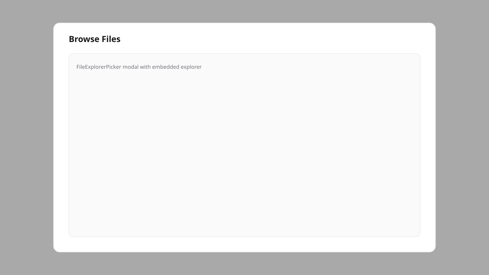

Modal picker to attach existing media from the explorer into a form field.

Modal picker to attach existing media from the explorer into a form field.

Built & maintained by Ardavan Shamroshan.

Laravel · Filament · product-minded admin UX. Finder-style explorer for panels that need real file workflows.